Introduction
MB Maniax Next Debugger is an extension for Visual Studio Code (VS Code from here on) that adds a ZX Spectrum Next emulator and a debugger to the editor. A program built with sjasmplus runs in an emulator based on the JNEXT core and you debug it right in its source code: stop it on a line, inspect registers and memory, step instruction by instruction – with the emulator screen next to your code.
If you are used to CSpect or DeZog, much of this will feel familiar: the CSpect
BREAK instruction works, and the special comments WPMEM,
LOGPOINT and ASSERTION use the same syntax as DeZog. The difference is that
there is nothing else to install or start – the emulator is part of the extension.
Features
- Source breakpoints based on the sjasmplus debug information (the SLD file), including the Next's 8K pages – a breakpoint in paged code stops only when its page is mapped in.
- Conditional breakpoints with no slowdown – the condition (
A == 5,mem[counter] == 3,nextreg[$50] == 10,FRAME > 100…) is evaluated by the emulator itself. Labels from the source can be used directly. - Hit counts (
3,>= 10,% 4) and logpoints, which print a message with values instead of stopping. - Machine event breakpoints: IM 1 / IM 2 interrupts, NMI, NEXTREG writes, port input/output, Copper, DMA, reset.
- Watchpoints – stop on a memory read or write.
- Stepping (Step Into / Over / Out), call stack with labels, registers and flags (editable), MMU pages, disassembly, memory viewer and editor, expressions in the Watch view and on hover.
- Step Back – the emulator remembers the last 10 seconds.
- Start into NextZXOS – the emulator boots the real NextZXOS and you debug the program NextZXOS starts (NextZXOS is downloaded from specnext.com on request).
- WiFi – the emulated ESP-01 module opens real network connections; network programs can be debugged against servers on your LAN or on the internet.
- Emulator screen in a VS Code panel, with sound and keyboard.
- Next panel with views of the hardware: sprites, Pattern RAM, palettes, layers, Layer 2, tilemap, the Copper program and all NEXTREG registers.
- Saved states of the whole machine, and export to a file.
- Profiler showing how many T-states the program spent on every source line.
Requirements
- Windows (x64) – the extension package
mbx-next-debugger-win32-x64-0.1.0.vsixcontains the debug server for 64-bit Windows. - Visual Studio Code 1.100 or newer.
- sjasmplus – the assembler you build the program with. It should be on the
PATH, so that the commandsjasmplusworks in a terminal. - No SD card and no Next ROMs are needed: the extension has its own ZX Spectrum 48K ROM and starts the program directly. An SD card with ROMs is only needed to emulate machines other than the Next (see ).
How to read this manual
The manual does not assume you know VS Code. Whenever a part of the window is mentioned, it says where to find it and which keyboard shortcut gets you there. Conventions:
- Ctrl+Shift+P – a keyboard shortcut (press the keys together).
- Run and Debug – the name of a part of the VS Code window, a button or a tab, exactly as it appears on screen.
- MB Maniax: Save State… – a command run from the Command Palette ().
mem[counter]– text you type (an expression, code, a setting).
Language. The manual assumes VS Code itself is in English (the default). Texts of the extension – the emulator screen, the Next panel, messages, the groups in the Variables view – follow the language of the extension (). Command names and the descriptions in Settings follow the VS Code display language instead.
Installation
The extension comes as a single file with the .vsix extension (for example
mbx-next-debugger-win32-x64-0.1.0.vsix). It is a package VS Code installs by
itself – do not unpack it.
Installing from a .vsix file
- Start VS Code.
- Open the Extensions view: in the narrow vertical strip of icons on the far left (the Activity Bar) click the icon with four squares, or press Ctrl+Shift+X. The Extensions list opens on the left.
- In the header of the list (top right, above the search box) click the three dots … (Views and More Actions) and choose Install from VSIX….
- Select the
.vsixfile in the dialog and confirm with Install. A notification in the bottom right corner reports when installation is complete.
The same is available from the Command Palette: Ctrl+Shift+P,
type vsix and choose Extensions: Install from VSIX…. From the
command line:
code --install-extension mbx-next-debugger-win32-x64-0.1.0.vsixUpdating to a new version
A new version is installed exactly the same way – install the new .vsix; there is no
need to uninstall the old one first. If a debug session is running, stop it first
(Shift+F5). After installation VS Code usually offers a button to restart
extensions; if it does not, or you are not sure the new version is running, reload the window
(next section).
Reloading the window (Developer: Reload Window)
After installing or updating the extension, the safest step is to reload the window – VS Code reloads all extensions, while open files and the window layout stay as they are:
- Press Ctrl+Shift+P (or F1). The Command Palette input box opens at the top centre of the window.
- Type
reload. - Choose Developer: Reload Window and press Enter.
The window disappears for a moment and is drawn again. Closing and restarting VS Code works too.
Checking the installation
In the Extensions list (Ctrl+Shift+X) type
MB Maniax into the search box. MB Maniax Next Debugger with its version number
should be listed among the installed extensions (Installed). Click it to open
its description page.
Extension language
The extension is available in English, Czech, Slovak, Spanish, German, French, Italian, Polish,
Portuguese (Brazil), Russian, Ukrainian, Japanese and Simplified Chinese. The language is chosen by
the mbxNext.language setting:
auto(default, shown as Automatic) – the VS Code display language if it is not English; otherwise the Windows language; otherwise English. On, say, Czech Windows with English VS Code the extension therefore speaks Czech.- or a fixed language:
en,cs,sk,es,de,fr,it,pl,pt-br,ru,uk,ja,zh-cn.
To change it:
- Open Settings: Ctrl+, (comma), or the menu File › Preferences › Settings.
- Type
mbxNextinto the search box at the top. - Choose the language in the Mbx Next: Language drop-down.
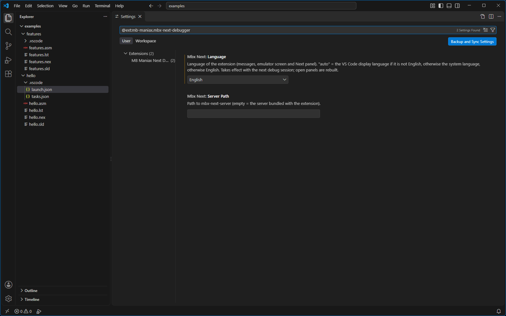
mbxNext: the extension language and the path
to the debug server.A change takes effect with the next debug session; panels that are open (emulator screen, Next panel) are rebuilt in the new language right away. Command names and the descriptions in Settings and launch.json follow the VS Code display language, not this setting.
Finding your way around VS Code
This chapter is for those who are new to VS Code. It describes the parts of the window you will meet while debugging and where to find them. Figure shows the window while debugging the example program.
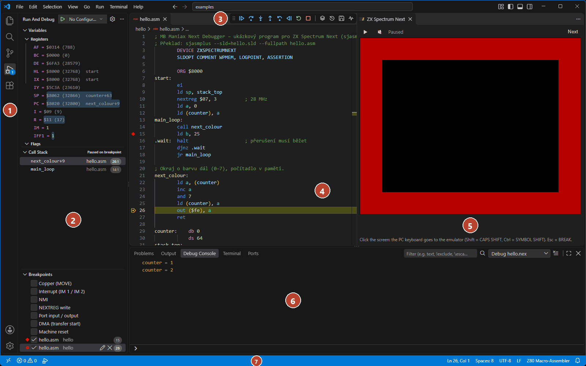
- Activity Bar – the narrow vertical strip of icons on the far left. It switches what the side bar shows: files (Explorer, Ctrl+Shift+E), search, extensions and, above all, Run and Debug (the “play” triangle with a bug, Ctrl+Shift+D).
- Run and Debug side bar – to the right of the Activity Bar. At the top is the green ▶ button with the name of the debug configuration (starts debugging), below it the Variables, Watch, Call Stack and Breakpoints sections. Click a section header to expand or collapse it.
- Debug toolbar – a floating row of buttons at the top centre of the window; it appears only while debugging.
- Editor – in the middle. Left of the line numbers is a narrow margin (the gutter) where you click to set breakpoints. The line the program is stopped on is highlighted in yellow with a yellow arrow in the margin.
- ZX Spectrum Next panel – the emulator screen; it opens to the right of the editor when debugging starts ().
- Bottom panel (Panel) – tabs Problems, Output, Debug Console, Terminal. Show and hide it with Ctrl+J.
- Status Bar – at the very bottom. It changes colour while debugging (usually to orange). On its right side is, among other things, the language of the open file (for example Plain Text) – chapter comes back to it.
Run and Debug
Start debugging with F5, or with the green ▶ button at the top of the
Run and Debug side bar (Ctrl+Shift+D). Next to the
button is a drop-down list of debug configurations from .vscode/launch.json – if you have
more than one, this is where you pick which one to start. If the folder has no launch.json, the
side bar shows a create a launch.json file link
().
Debug toolbar
While debugging, a floating toolbar appears at the top centre of the window. You can drag it by its left edge. The buttons from the left:
They are followed by the buttons of this extension (icons; hover to see the name): Next Panel (Sprites, Palettes, …) – opens the Next panel, Save State… and Restore State… – saved states, Start Profiler / Stop Profiler – the profiler. If not all buttons fit, VS Code hides some of them behind an arrow or three dots at the end of the toolbar.
Variables – registers and machine state
The Variables section of the Run and Debug side bar shows the machine state whenever the program is stopped. It has four groups:
- Registers –
AF BC DE HL IX IY SP PCin hex and decimal ($8000 (32768)), followed by the label the value points to (start,main_loop+3); thenI,R, the interrupt modeIMandIFF1. - Flags –
S Z H P/V N Cas 0 or 1. - Shadow registers –
AF' BC' DE' HL'(collapsed by default). - Machine (MMU, time) – Frame (frame number since start), Total T-states
and the eight MMU slots:
MMU0 ($0000)…MMU7 ($E000)with the number of the 8K page mapped into the slot (page 10 ($0A)).
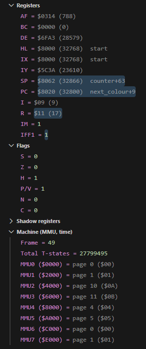
Register and flag values can be changed ().
Watch
The Watch section holds expressions you want to keep an eye on – for
example mem[counter] or HL. Add them with the + button in the
section header (it appears when you hover over the header), or select text in the editor,
right-click and choose Add to Watch. The values are recalculated every time
the program stops. Details in .
Call Stack
The Call Stack section shows where the program is stopped and how it got there: the current location at the top (the name of the nearest label), below it the places subroutines were called from. Click a line to move the editor to that place in the source. Locations outside your source (ROM, code without debug information) are greyed out and show their address. The section header also shows the reason for stopping – for example Paused on breakpoint, Paused on step, Paused on BREAK or the name of an event.
Breakpoints
The Breakpoints section lists all breakpoints and logpoints; the check box disables one temporarily, a double-click takes you to its line. At the top of the list are the machine event check boxes of this extension (Interrupt (IM 1 / IM 2), NMI, NEXTREG write …), see . The section header has buttons to deactivate and remove all breakpoints.
Debug Console
Debug Console is a tab of the bottom panel. Open it with
Ctrl+Shift+Y, the menu View › Debug Console,
or by clicking the Debug Console tab in the bottom panel
(Ctrl+J shows the panel). Logpoint output, messages of the extension and
emulator output appear here. At the very bottom is an input line with a > prompt:
type an expression (for example HL) and press Enter – its value is printed.
The command m address dumps memory (). The
↑ ↓ arrows browse previously entered commands.
Command Palette
The Command Palette is where you can run any command of VS Code and its
extensions. Open it with Ctrl+Shift+P or F1, or from the menu
View › Command Palette…. An input box appears at the top centre of the window;
type part of a command name (for example mb maniax) and pick it with the arrow keys.
Commands of this extension start with MB Maniax: (the emulator screen with
MB Maniax Next:). Some of them are listed only while a debug session is
running.
Terminal and Problems
The Terminal (Ctrl+`, the key below Esc) is a command line in the bottom panel – this is where sjasmplus prints its output while building. Build errors also appear in the Problems tab (Ctrl+Shift+M); click an error to jump to its source line.
Your first program
In this chapter you build and run the example program hello from the
examples/hello folder. The program changes the border colour and counts in memory how
many times it did so. The procedure is the same for your own project.
; examples/hello/hello.asm (shortened)
DEVICE ZXSPECTRUMNEXT
SLDOPT COMMENT WPMEM, LOGPOINT, ASSERTION
ORG $8000
start: ei
ld sp, stack_top
nextreg $07, 3 ; 28 MHz
ld a, 0
ld (counter), a
main_loop:
call next_colour
ld b, 25
.wait: halt
djnz .wait
jr main_loop
next_colour:
ld a, (counter)
inc a
and 7
ld (counter), a
out ($fe), a
ret
counter: db 0
ds 64
stack_top:
SAVENEX OPEN "hello.nex", start, stack_top
SAVENEX CORE 3, 0, 0
SAVENEX AUTO
SAVENEX CLOSEBuilding with debug information
For the debugger to know which source line corresponds to which address, it needs an SLD
file (Source Level Debugging) from sjasmplus. sjasmplus writes it with the --sld
option:
sjasmplus --sld=hello.sld --fullpath hello.asm--sld=hello.sld– writes the debug information (lines, addresses, 8K pages, labels, keywords from comments).--fullpath– writes full source paths into the SLD, so the extension reliably matches lines with the files open in the editor (even when the source is split into several files withINCLUDE).
The program itself (hello.nex) is written by the SAVENEX directive in the
source.
Check that sjasmplus can be started: open a terminal (Ctrl+`) and
type sjasmplus --version. If Windows does not know the command, add the sjasmplus folder
to the PATH variable (then close and restart VS Code), or put the full path to
sjasmplus.exe into tasks.json.
Opening the folder
VS Code works with folders (workspaces), not single files – debug and task settings are
looked up in the .vscode subfolder of the open folder.
- Menu File › Open Folder… (Ctrl+K
Ctrl+O) and select the
examples\hellofolder. - If VS Code asks whether you trust the authors of the folder (Do you trust the authors…), confirm with Yes, I trust the authors – otherwise it would not be allowed to run tasks (the build).
- In the Explorer on the left (Ctrl+Shift+E)
click
hello.asm; it opens in the editor.
The launch.json file – how to debug
The .vscode/launch.json file tells VS Code what to start on F5. The example
already has one:
{
"version": "0.2.0",
"configurations": [
{
"type": "mbx-next",
"request": "launch",
"name": "Ladit hello.nex",
"program": "${workspaceFolder}/hello.nex",
"sld": "${workspaceFolder}/hello.sld",
"stopOnEntry": true,
"preLaunchTask": "sjasmplus"
}
]
}"type": "mbx-next"– debug with this extension."name"– the name shown in the list next to the green ▶ button (in the example it is Czech, “Debug hello.nex”; use any name you like)."program"and"sld"– the built program and its debug information;${workspaceFolder}is the open folder."stopOnEntry": true– stop at the program's first instruction."preLaunchTask": "sjasmplus"– before starting, build the program with thesjasmplustask from tasks.json (next section).

For your own project create launch.json like this: in the Run and Debug
side bar click create a launch.json file and choose MB Maniax
Next Debugger. You get a configuration “Debug on ZX Spectrum Next” with
program.nex and program.sld – replace the names with yours. To add another
configuration to an existing launch.json, click Add Configuration… at the
bottom right of the launch.json editor and choose MB Maniax Next Debugger: Next
program (sjasmplus). All attributes are described in .
The tasks.json file – how to build
A task is a command VS Code runs for you – here the sjasmplus build. The example's
.vscode/tasks.json:
{
"version": "2.0.0",
"tasks": [
{
"label": "sjasmplus",
"type": "shell",
"command": "sjasmplus",
"args": ["--sld=hello.sld", "--fullpath", "--lst=hello.lst", "hello.asm"],
"options": { "cwd": "${workspaceFolder}" },
"group": { "kind": "build", "isDefault": true },
"problemMatcher": {
"owner": "sjasmplus",
"fileLocation": ["autoDetect", "${workspaceFolder}"],
"pattern": {
"regexp": "^(.*)\\((\\d+)\\):\\s+(error|warning)[^:]*:\\s+(.*)$",
"file": 1, "line": 2, "severity": 3, "message": 4
}
}
}
]
}"label"– the task name;preLaunchTaskin launch.json refers to it."args"– sjasmplus options (--lstalso writes a listing)."group": … "isDefault": true– the default build task: run it any time with Ctrl+Shift+B, even without debugging."problemMatcher"– sjasmplus errors and warnings appear in the Problems tab and as squiggles in the source.
Starting: F5
- Press F5. The Terminal opens in the bottom panel and the build runs. (If the build fails, VS Code offers Debug Anyway or Show Errors – look into Problems.)
- The emulator starts and the ZX Spectrum Next panel with the screen opens to the right of the editor.
- Because the example has
"stopOnEntry": true, the program stops right at its first instruction (eiafter thestartlabel) – the line is yellow and the Variables and Call Stack sections on the left fill in. - Click in the margin left of the line number of
call next_colour– a red dot appears: a breakpoint. - Press F5 (Continue). The program runs and stops at the breakpoint.
- Press F11 (Step Into) – you are inside
next_colour. Keep stepping with F11 and watchAchange in the Variables section; afterout ($fe), athe border colour on the emulator screen changes. - Hover over the word
counterin the source – a tooltip shows its address and the memory content. In the Debug Console (Ctrl+Shift+Y) typem counterand press Enter. - End debugging with Shift+F5 or the Stop button on the debug toolbar.
Without launch.json
For a quick try, launch.json is not required: open an .asm file in the editor (also
.a80, .z80 or .s) and press F5. The extension starts
the .nex and .sld of the same name from the same folder (for
game.asm that is game.nex and game.sld). In this mode the program
is not built – build it first (Ctrl+Shift+B or in the terminal).
If VS Code asks which debugger to use (Select debugger), choose
MB Maniax Next Debugger.
Program data and esxDOS. Without an SD card image, the program sees its own
folder through esxDOS (loading data, saved games). A different folder or an SD card image is set in
launch.json with the esxdosRoot and sdImage attributes.
In that folder the program can read and write files, delete them (also by wildcard, such as
*.TMP), rename and truncate them, create and remove subfolders and set the read-only
attribute. The answers and error codes are those of NextZXOS. Changes go to disk at once, and
Step Back () does not undo them.
Debugging
Breakpoints
A breakpoint stops the program just before the instruction on its line is executed.
- With the mouse: move the pointer into the narrow margin left of the line numbers – a faint red dot appears. Click to set it, click again to remove the breakpoint.
- With the keyboard: put the cursor on the line and press F9 (toggle).
- From the context menu: right-clicking the margin offers Add Breakpoint, Add Conditional Breakpoint… and Add Logpoint…; right-clicking an existing dot offers Edit Breakpoint…, Disable Breakpoint and Remove Breakpoint.
You can set breakpoints before debugging starts; they are sent to the emulator at startup. If there is no instruction on the line (a comment, an empty line, a label on its own), the breakpoint moves to the nearest following line with an instruction (at most 20 lines down). If there is none there either, the dot stays grey and hollow (unverified breakpoint) and its tooltip says why – for example No instruction on this line or below it (according to SLD) or SLD from sjasmplus is missing ("sld" attribute).
Paged memory. The sjasmplus SLD knows the 8K page of every line (when the
source uses DEVICE ZXSPECTRUMNEXT). The breakpoint then stops only when that page is
actually mapped into the corresponding MMU slot – code of another page at the same address does not
trigger it. When the same line is assembled into several pages, the breakpoint applies to all of
them.
If you cannot set a dot in the margin at all (nothing appears on hover), VS Code does not consider the file a language the extension reports breakpoints for. See chapter .
Stepping
While the program is stopped, control it with the debug toolbar buttons or keys:
| Key | Action | Description |
|---|---|---|
| F5 | Continue | Runs until the next breakpoint, event or pause. |
| F6 | Pause | Stops the running program at the next instruction boundary. |
| F11 | Step Into | One instruction. On HALT it waits until an interrupt ends it. |
| F10 | Step Over | Like Step Into, but CALL, RST and DJNZ run to completion and the machine stops at the following instruction. |
| Shift+F11 | Step Out | Runs until the program returns from the current subroutine (one level up the stack). |
You can also pause and resume the program with the ⏸ / ▶ button in the emulator screen panel.
Run to Cursor and Jump to Cursor
While the machine is stopped, right-click a source line:
- Run to Cursor – the program runs until it gets to this line (like a one-shot breakpoint).
- Jump to Cursor – moves
PCto this line without running the code in between. Useful for skipping a piece of code or repeating an instruction. If the line is assembled at several addresses (several pages), VS Code offers a choice – the items look like$C000 (page 12), and pages that are not mapped at the moment are marked not mapped.
Conditional breakpoints
A conditional breakpoint stops only when its condition holds. The condition is evaluated by the emulator itself on every pass, so it does not slow the program down – feel free to put one into a loop that runs thousands of times per frame.
- Right-click the margin left of the line and choose Add Conditional Breakpoint… (for an existing breakpoint Edit Breakpoint…).
- A small input box opens below the line. It has a drop-down on the left: leave it at Expression.
- Type the condition and press Enter. The breakpoint dot gets an
=sign.
Example conditions:
A == 5
HL > $4000 and not ZF
mem[counter] == 3
mem16[score] >= 1000
nextreg[$50] == 10
FRAME > 100
B == 0 or (IX >= enemies and IX < enemies_end)Labels from the source (counter, score) are written directly. The full
expression language is described in chapter . An error in the
condition (a typo, an unknown name) is caught by the emulator right away: the breakpoint stays grey
and its tooltip shows the error. A run-time error (e.g. division by zero) is printed to the Debug
Console.
Hit counts
In the breakpoint edit box choose Hit Count in the drop-down and enter which pass should stop:
| Entry | Stops |
|---|---|
3 or == 3 | exactly on the 3rd pass |
>= 10 | on the 10th pass and every one after it |
> 10, < 5, <= 5 | likewise |
% 4 | on every 4th pass (4th, 8th, 12th …) |
A condition and a hit count can be combined – passes are then counted only when the condition holds. The counter starts from zero whenever breakpoints change.
Logpoints
A logpoint does not stop the program; it only prints a message to the Debug Console – a debug print you do not have to write into the program. Right-click the margin and choose Add Logpoint… (or Log Message in the breakpoint edit box) and type the message. Expressions in curly braces are replaced by their values:
colour {A}, score {mem16[score]}
HL={HL:hex} DE={DE:hex} flags {F:flags}A format may follow a colon: hex, unsigned (default), signed,
char (ASCII character), bits (binary), flags (flags as
SZHPNC, cleared ones as -), labels (the label at the address).
A logpoint has a diamond shape in the margin. The message is printed on every pass; with a hit count,
only when the count matches.
Machine event breakpoints
Some bugs are not tied to a particular line: “who keeps overwriting register $50?”, “when did the interrupt come?”. For these the extension adds event check boxes to the Breakpoints section. Ticking a box enables the event; when you hover over the item, a pencil (Edit Condition) appears on the right for entering a condition – without a condition every event of that kind stops.
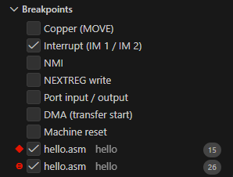
A == 3 and a logpoint.All event conditions can also use registers, memory and the other names from chapter
; here PC is the address of the instruction that
caused the event. The machine stops right after that instruction. Examples:
REG == $50 or REG == $51, (PORT & $FF) == $FE,
REG == $15 and SOURCE == CPU. After stopping on an event, its name is shown in the Call
Stack header.
PORT is the full 16-bit port address as seen on the bus – for
out ($fe),a the high byte is the value of A (port $01FE,
$02FE …). The condition PORT == $FE would therefore stop only when
A = 0. For ports decoded by the low byte only (ULA $FE, Kempston
$1F …) write (PORT & $FF) == $FE; compare the full number for 16-bit ports
(PORT == $243B).
Watchpoints – stopping on memory access
A watchpoint (a “data breakpoint” in VS Code) stops the program when an instruction reads or writes the chosen memory. The machine stops right after the instruction that made the access.
- On a register: in the Variables section right-click
BC,DE,HL,IX,IYorSPand choose Break on Value Change (write), Break on Value Read (read) or Break on Value Access (both). It watches the byte the register currently points to – not the register itself. - On a label or address: add an expression to the Watch section that
is just a label name (
counter) or a number ($5B00), right-click it and choose Break on Value Change. - With a comment in the source:
; WPMEM() – handy for areas longer than a byte and for watchpoints you want to keep.
Watchpoints are listed in the Breakpoints section, where you also disable or remove them. Newer VS Code versions also offer Add Data Breakpoint at Address in the Breakpoints section header, where you enter an address and length directly.
Expressions in Watch and on hover
You can type any expression from chapter into the
Watch section: mem[counter], HL,
nextreg[$07], mem16[stack_top - 2], mmu[3]. The result is shown in
hex and decimal ($03 (3)). If the expression is just a label name, its address is shown
together with the memory content there: $8023 (32803) → [$03] [$0003] – the byte and the
16-bit word in square brackets.

mem[counter], HL and
nextreg[$07].While the program is stopped, just hover over a register or label in the editor – a tooltip shows the value and the memory it points to. The tooltip appears only for words that are a valid expression.
Debug Console and memory dump
Type an expression into the Debug Console input line (Ctrl+Shift+Y, the
line with > at the very bottom) and press Enter; its value is printed just like
in Watch. In addition, there is a memory dump command:
m address
m address, lengthBoth the address and the length are expressions (a number, label, register…). Without a length,
128 bytes are dumped; the maximum is 4096. Each line has the address, 16 bytes in hex, the same bytes
as text (non-printable ones as .) and the label that starts at or precedes the
address:
> m start, 32
$8000 FB 31 64 80 ED 91 07 03 3E 00 32 23 80 CD 17 80 .1d.....>.2#.... start
$8010 06 19 76 10 FD 18 F6 3A 23 80 3C E6 07 32 23 80 ..v....:#.<..2#. main_loop+3
> m HL, 16
> m stack_top - 16, 16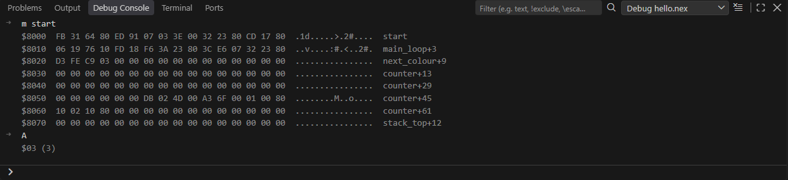
m start and the value of the expression
A.Viewing and editing memory
When you hover over a 16-bit register in the Variables section, a small View Binary Data icon appears on the right. It opens memory from the address in the register in the VS Code hex editor (the Microsoft Hex Editor extension – if you do not have it, VS Code offers to install it). Bytes can be overwritten in the hex editor; the write goes straight into the emulator's memory. The memory is shown as the CPU sees it (64 KB according to the current MMU mapping).
Disassembly
When the program stops outside your source (in ROM, in code without SLD, in data), or when you want to see the actual instructions, open the disassembly: right-click in the editor and choose Open Disassembly View, or run Debug: Open Disassembly View from the Command Palette. Instructions are shown with labels from the SLD and source lines. In the disassembly too you can click left of an address to set a breakpoint, and step by instruction. Without an SLD file this is the only place to debug.
Editing registers and flags
In the Variables section double-click a register value (or right-click
Set Value), type a new value and press Enter. Numbers can be written as
$FF, 0xFF, #FF, FFh, 255 or in binary
%1010. Flags (S Z H P/V N C) take 0 or 1. To move PC to another
line, Jump to Cursor () is more convenient – the editor
follows it.
Expression language
The same expression language is used everywhere: in breakpoint and watchpoint conditions, in event conditions, in logpoints (inside curly braces), in the Watch section, on hover, in the Debug Console and in keywords in comments (). Expressions are evaluated by the emulator in 32-bit signed integers. A condition holds when the result is non-zero.
Numbers
| Written as | Meaning |
|---|---|
255 | decimal |
$FF, 0xFF | hexadecimal |
0b1010 | binary |
true, false | 1 and 0 |
The forms #FF, 0FFh and %1010 do not work in
conditions entered in VS Code (% is the remainder operator). They work only in
WPMEM / LOGPOINT / ASSERTION comments and when editing a register value.
Registers and flags
| Name | Meaning |
|---|---|
A F B C D E H L I R | 8-bit registers |
AF BC DE HL IX IY SP PC | 16-bit registers |
AF' BC' DE' HL' | shadow registers (also written AF2 BC2 DE2 HL2) |
IXH IXL IYH IYL | high and low halves of IX and IY |
CF ZF SF PF HF NF | flags carry, zero, sign, parity/overflow, half-carry, subtract (0/1) |
IFF1 IFF2 IM HALTED | interrupt flip-flops, interrupt mode, CPU halted on HALT |
Register names from the first four rows (including AF' and IXH) and
IM, IFF1, IFF2 may also be written in lower case (the extension
converts them); write all other names (AF2, the flags, HALTED, the names in the
following tables) in upper case as in the table.
Memory, Next registers and MMU
| Written as | Value |
|---|---|
mem[a] | byte at address a (CPU memory 0–$FFFF with the current mapping) |
mem16[a] | 16-bit word at address a (little endian) |
stack[n] | word on the stack: stack[0] = at SP, stack[1] = at SP+2 … |
phys[page, offset] | byte in physical 8K page (offset 0–$1FFF), regardless of mapping |
nextreg[r] | value of Next register r (0–255) |
mmu[s] | 8K page set for slot s (0–7) by the MMU registers |
page[s] | 8K page slot s actually uses |
Reads in expressions have no side effects: they do not trigger watchpoints and do not change the state of registers whose reads have side effects.
Time and raster
| Name | Value |
|---|---|
FRAME | frame number since start |
CYCLE | time since start in 28 MHz master clock cycles |
TFRAME | time since the start of the frame in 28 MHz cycles |
VC_ULA | display line (0 = first paper line, 0–191 paper) |
PHC | pixel column (0 = first paper pixel) |
CVC | line as compared by the Copper and the line interrupt (NR $1E/$1F); = VC_ULA + NR $64 |
HC_ULA | 7 MHz horizontal counter used by the Copper |
RAW_HC, RAW_VC | raw raster counters |
MACHINE | machine type: 0 = 48K, 1 = 128K, 2 = +3, 3 = Pentagon, 4 = Next |
Labels
Global labels from the source (from the SLD) are written directly and evaluate to their address:
mem[counter], HL == next_colour, mem16[score] > 100. The case
must match the source. If a label has the same name as a register, the register wins; force the label
with an at sign: @c. Local labels with a dot work too, in their full form:
main_loop.wait evaluates to the address of the local label .wait inside
main_loop.
Operators
From the lowest precedence to the highest (operators on one line have the same precedence):
| Operators | Meaning |
|---|---|
or | logical OR (short-circuit) |
and | logical AND (short-circuit) |
not | logical negation |
== != < > <= >= | comparison (result 1 or 0, signed) |
| ^ | bitwise OR, XOR |
& | bitwise AND |
<< >> | shifts |
+ - | addition, subtraction |
* / % | multiplication, integer division, remainder |
-x ~x | unary minus, bitwise NOT |
Unlike C, the bitwise operators bind tighter than comparisons, so
A & $80 == $80 means (A & $80) == $80. Parentheses never hurt, though.
Write and, or and not instead of &&,
|| and !.
Names for events and watchpoints
In event conditions () data about the event are available as
well: REG, VALUE, PREV, PORT, SOURCE (with
the constants CPU, COPPER, DMA), CPC, SRC,
DST – the table in the events section shows which of them each event has. In a watchpoint
condition (the fourth WPMEM parameter) there are ADDR (the accessed address) and
VALUE (the byte transferred). A name the event does not carry is rejected by the emulator
when the condition is entered.
Examples
| Expression | True when… |
|---|---|
A == 5 | register A is 5 |
HL >= $4000 and HL < $5800 | HL points into the ULA screen |
not ZF | the Z flag is clear |
mem[counter] == 3 | the byte at label counter is 3 |
stack[0] == main_loop | the return address on top of the stack is main_loop |
nextreg[$07] & 3 == 3 | the CPU runs at 28 MHz |
mmu[6] == 20 | page 20 is in slot 6 ($C000) |
FRAME % 50 == 0 | every fiftieth frame |
VC_ULA >= 192 | the beam is below the paper (bottom border) |
sjasmplus keywords in comments
Watchpoints, logpoints and assertions can be written right into the source as special comments (the same syntax as in DeZog). The advantage: they are part of the code, do not get lost, and work in every debug session without clicking.
SLDOPT – enabling them in sjasmplus
sjasmplus writes these comments into the SLD file only when the source contains (preferably at the beginning) the line:
SLDOPT COMMENT WPMEM, LOGPOINT, ASSERTIONList just the words you use. sjasmplus looks for the word anywhere in the comment and is
case-sensitive (write them in upper case); it does not write block comments /* */ into
the SLD. A comment on a line of its own applies to the next instruction, a comment after an
instruction to the instruction on the same line. In a macro the comment refers to the place the macro
is invoked from.
WPMEM – watchpoint
; WPMEM [address [, size [, access [, condition]]]]- address – an expression; without it, the address of the line the comment is on (typically a data label).
- size – the number of bytes watched, 1 by default.
- access –
rread,wwrite,rwboth (default). - condition – optional; stops only when it holds (
ADDRandVALUEcan be used).
score: dw 0 ; WPMEM – watch the 1 byte at "score" (read and write)
buffer: ds 16 ; WPMEM buffer,16,w – stop on a write into the 16 bytes
lives: db 3 ; WPMEM lives,1,w,VALUE == 0 – stop when zero is written
; WPMEM $4000, $1800, w – any write into the ULA bitmapAfter stopping, the Call Stack header shows the reason WPMEM and the Debug Console a line with
the address range and the comment location, for example
WPMEM $8030–$803F (game.asm:120) – WPMEM buffer,16,w.
LOGPOINT – debug print
; LOGPOINT [GROUP] text ${expression} text ${expression:format}Prints the text to the Debug Console on every pass; ${…} is replaced by the value of the
expression. The formats are the same as for VS Code logpoints: hex, unsigned,
signed, char, bits, flags, labels. An
optional group in square brackets right after the word is printed at the start of the line
([AI] …). The output in the Debug Console links to the source line; click it to go
there.
ld a,(hl)
; LOGPOINT [MAP] read ${A:hex} from ${HL:hex}
ld (de),aASSERTION – assertion
; ASSERTION expressionStops the program when the expression is false (zero). An empty ASSERTION always
stops. The Call Stack header shows the reason assertion with the description ASSERTION failed:
A < 10; the same text with the source location is printed to the Debug Console.
cp 10 ; ASSERTION A < 10 – stop when the expression is false
; ASSERTION SP > stack_bottom and SP <= stack_top
ret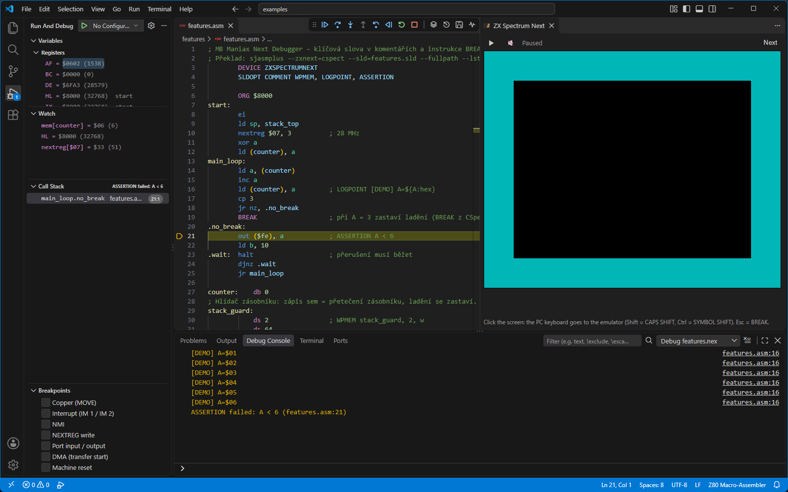
When keywords are evaluated
LOGPOINT and ASSERTION are breakpoints at the address of their line – they are evaluated
before the instruction on that line is executed. In the example
ld a,(hl) ; LOGPOINT … ${A}, A would be printed before the load. To see the
result of an instruction, put the comment on a line of its own below it (it then applies to the next
instruction), as in the example above.
Expression syntax in comments
Comments accept the language from chapter plus the DeZog forms, which the extension converts:
| DeZog | The same in the expression language |
|---|---|
b@(x), w@(x) | mem[x], mem16[x] |
&&, ||, ! | and, or, not |
= | == |
#FF, 0FFh | $FF |
%1010 (where a number is expected) | 0b1010 |
Errors in comments (unknown label, invalid size, unknown access or format) are reported by the extension as a notification in the bottom right corner, in the form WPMEM in a comment (game.asm:120): …; the other keywords keep working.
Turning them off
Each kind can be turned off in launch.json without changing the source: "wpmem": false,
"logpoints": false, "assertions": false (all default to true).
CSpect BREAK
The BREAK instruction from the CSpect emulator stops the program like a breakpoint –
handy where writing a stop into the code is easier than clicking.
- sjasmplus with
--zxnext=cspectassemblesBREAKasFD 00. The older CSpectDD 01and ZEsarUXED FFalso work. - The machine stops just after the instruction (PC = BREAK address + 2): the yellow line is on
the instruction after
BREAK, the Call Stack description gives the address of the BREAK.
The Call Stack header shows the reason BREAK with the description Paused on BREAK at
$8003. Continue as usual (F5, steps). Turn stopping off in launch.json:
"magicBreakpoint": false.
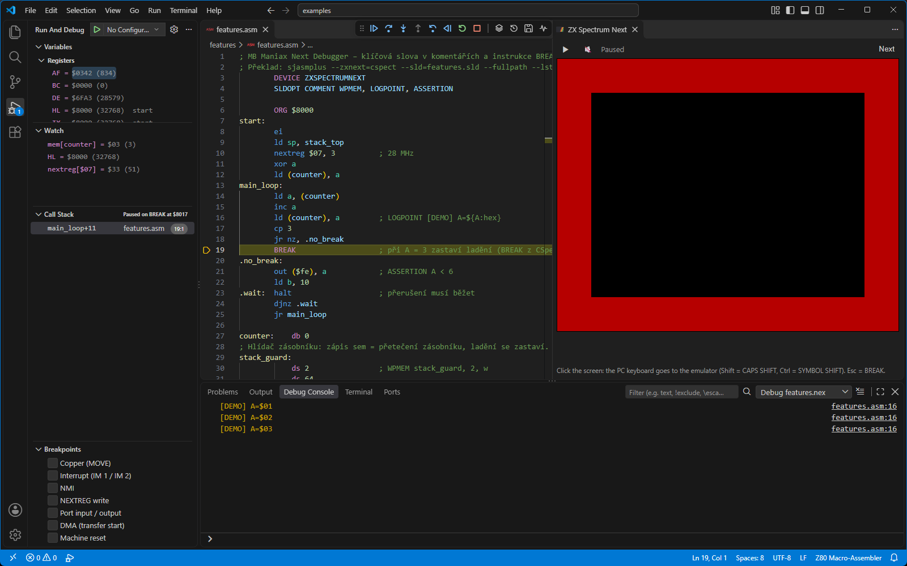
On real hardware FD 00 runs as a NOP, but DD 01 runs as
LD BC,nn and swallows the next two bytes. Don't leave DD 01 in release builds.
With magicBreakpoint off, DD 01 behaves exactly as on a real Next.
Emulator screen
When debugging starts, the ZX Spectrum Next panel with the emulator screen opens to the right of the editor. If you close it, reopen it with MB Maniax Next: Show Emulator Screen from the Command Palette. The panel is an ordinary editor tab – drag it by its tab elsewhere (to the bottom, into its own window, onto a second monitor: right-click the tab and choose Move into New Window).
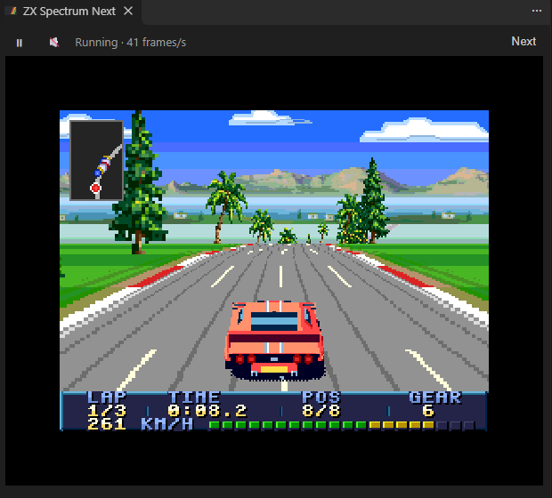
The bar at the top of the panel:
- ⏸ / ▶ (Pause / continue) – pauses or resumes the program, like F6 / F5.
- 🔇 / 🔊 (Sound) – turns sound off and on.
- Status – Waiting for a debug session… (no debug session), Paused, or Running · 50 frames/s – the actual emulation speed. 50 frames/s is normal; a markedly lower number means the computer cannot keep up with the emulation.
- Next – opens the Next panel ().
Keyboard
Click the screen: while it has the focus, the PC keyboard goes to the emulator. Shift is CAPS SHIFT, Ctrl is SYMBOL SHIFT and Esc is BREAK. Other PC keys (arrows, Backspace …) are translated by the emulator's key map. Clicking outside the screen (for example into the editor) gives the keyboard back to VS Code and releases all keys held in the emulator. This hint is also shown below the screen in the panel.
Debugging shortcuts (F5, F10 …) work only when VS Code has the focus, not the emulator screen. If F5 “does nothing”, click into the editor first.
Sound
The browser inside VS Code may play sound only after a user action – sound therefore starts the first time you click the screen (or the 🔇 button). Sound plays only while running; it is silent while paused and stepping. If the sound is choppy, the emulation cannot keep up – check the frames per second in the bar and chapter .
Pause, stops and the picture
While the program is stopped (breakpoint, step, pause), the screen shows the state at the moment it stopped. If the machine stops in the middle of a frame, the top part of the picture is already new and the bottom part still from the previous frame – just like the beam. The Next panel can draw a highlight of the selected sprite, tile or line onto the screen ().
Next panel
The Next panel shows the state of the Next hardware that CPU registers don't show: sprites, patterns, palettes, the individual display layers, Layer 2, the tilemap, the Copper program and all NEXTREG registers.
Opening and controls
Open the panel in one of three ways:
- with the button on the debug toolbar (layers icon, tooltip Next Panel (Sprites, Palettes, …)),
- with the Next button in the bar of the emulator screen panel,
- with the command MB Maniax: Next Panel (Sprites, Palettes, …) from the Command Palette.
The panel opens next to the editor as another tab named Next; like any tab, it can be dragged elsewhere.
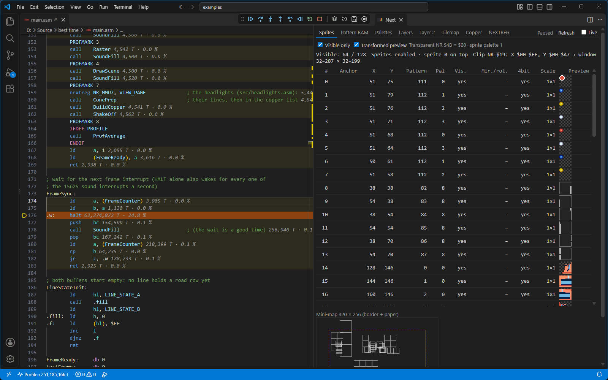
At the top of the panel is a bar:
- Tabs on the left – Sprites, Pattern RAM, Palettes, Layers, Layer 2, Tilemap, Copper, NEXTREG. The panel remembers the last open tab.
- On the right the status – Waiting for a debug session…, Running or Paused,
- Refresh – reloads the data of the displayed tab,
- Live – refreshes the displayed tab while running too, twice per second.
Without Live, the displayed tab is refreshed every time the machine stops (breakpoint, step, pause) and with the Refresh button. Only the visible tab is refreshed, so hidden tabs cost nothing.
Highlighting on the emulator screen
Some tabs can point out the selected item right on the emulator screen (the ZX Spectrum Next panel): the Sprites tab the sprite under the mouse or the selected sprite, the Tilemap tab the tile under the mouse, the Copper tab the line the WAIT under the mouse waits for. The highlight rectangle is drawn over the picture; it disappears when the mouse leaves the item or you switch tabs.
The following sections describe the individual tabs. Register numbers are written as
NR $xx; almost every label in the panel has a tooltip with an explanation (hover over
it).
Sprites
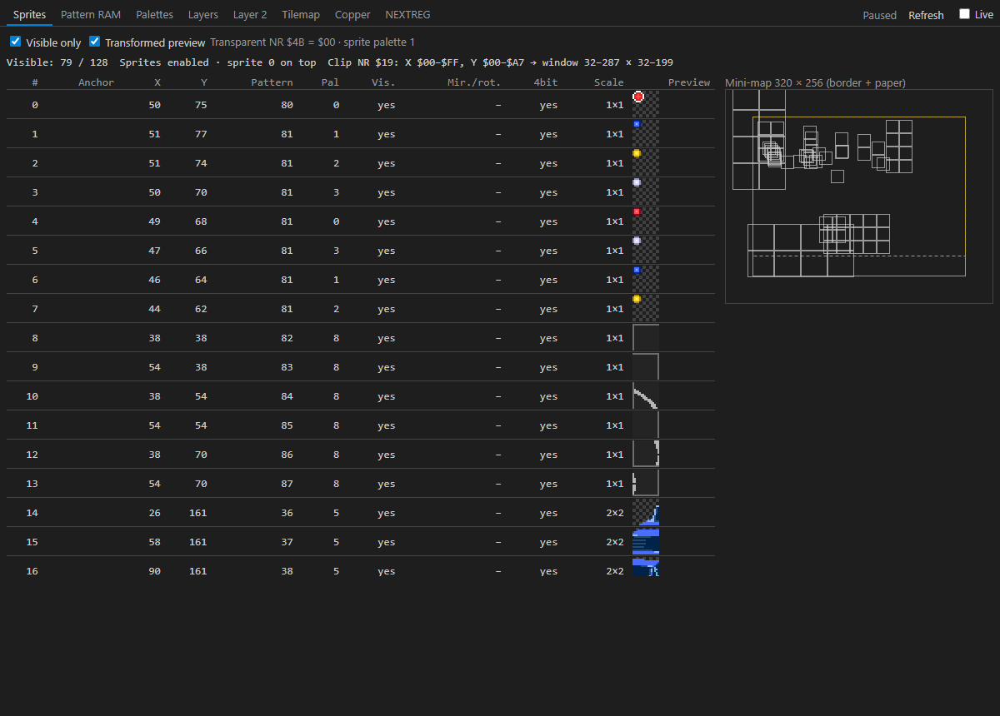
Toolbar: Visible only hides sprites with the visibility bit cleared
(on by default); Transformed preview draws previews with mirroring and
rotation as they appear on screen. To the right is the status: the transparent colour
(Transparent NR $4B = $E3) and which sprite palette is used.
Summary line: the number of visible sprites (Visible: 12 / 128), whether sprites are
enabled (Sprites disabled (NR $15 b0) is highlighted as a warning), whether they are drawn over
the border (over border) and whether sprite 0 is on top (sprite 0 on top), and the sprite
clip window – the raw NR $19 values and the resulting window in screen coordinates.
The table has a row for each sprite:
| Column | Meaning |
|---|---|
# | sprite number 0–127 |
| Anchor | for a relative sprite rel → #n: the number of its anchor |
| X, Y | position in 320 × 256 coordinates including the border (X 0 = left border edge, the paper starts at 32, 32) |
| Pattern | the pattern number the hardware reads |
| Pal | palette offset (the upper 4 bits of the colour index) |
| Vis. | visibility bit |
| Mir./rot. | X, Y = mirroring, R = rotation |
| 4bit | 4-bit sprite (128 B per pattern) instead of 8-bit (256 B) |
| Scale | magnification X × Y (1, 2, 4, 8) |
| Preview | the pattern in the colours of the active palette; checkerboard = transparent pixels |
For relative sprites (anchor + relative sprites) the table already shows the resolved values – position, pattern, palette and transformations as the hardware draws them. The tooltip over a row shows the raw attributes (5 bytes), the pattern address in Pattern RAM and the sprite's rectangle on screen. Invisible sprites are greyed out.
The mini-map on the right is the whole 320 × 256 area (border + paper): the 256 × 192 paper is outlined, the clip window dashed, each visible sprite drawn as a rectangle. Hovering over a table row or a sprite in the mini-map highlights the sprite in the mini-map and on the emulator screen. Click to select it – the highlight then stays even when the mouse moves away (click again to deselect). Clicking the mini-map selects the topmost sprite at that point and scrolls the table to its row.
Pattern RAM
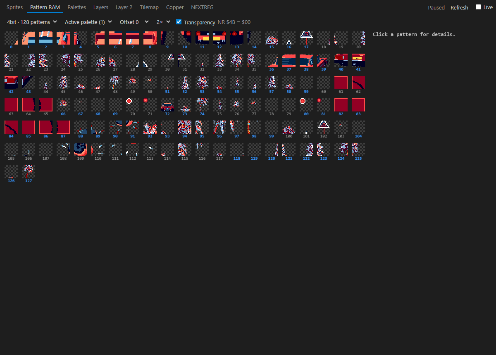
The whole sprite pattern memory (16 KB) as a grid. Toolbar:
- Pattern format – 8bit · 64 patterns or 4bit · 128 patterns.
- Sprite palette – Active palette (per NR $43 bit 3, which one in parentheses), or fixed Sprites 1 / Sprites 2.
- Offset 0–15 – the palette offset for the preview (for 4-bit patterns the upper nibble of the index, for 8-bit ones added to the upper nibble).
- Grid zoom and Transparency – draw pixels with the NR $4B value as transparent (checkerboard).
The tooltip over a pattern shows its number and address and which sprites use it – visible and hidden ones separately. Click a pattern: an enlarged detail appears below the grid with the addresses, the list of sprites using it and, when you hover over a pixel, its coordinates, value (for 4-bit patterns also which nibble), palette index and colour in RGB333 and RGB888.
Palettes
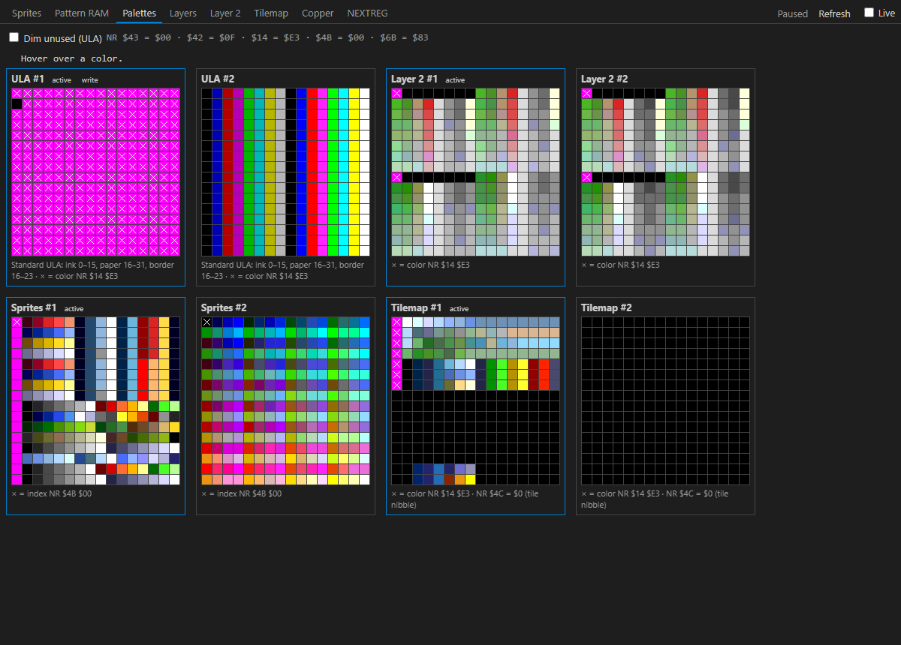
All eight Next palettes, each as a 16 × 16 grid: ULA #1 and #2, Layer 2 #1 and #2, Sprites #1 and #2, Tilemap #1 and #2. The colour index increases row by row from left to right (the first row is 0–15).
- The active badge – this palette is used for rendering.
- The write badge – writes through NR $41/$44 currently go here (per NR $43 bits 6:4).
- A cross × marks the transparent colour: for ULA, Layer 2 and tilemap the colour NR $14, for sprites the index NR $4B. The legend below the palette says so and, for ULA, describes which indexes are ink, paper and border (standard ULA or ULANext with the format from NR $42).
- Dim unused (ULA) – in the ULA palettes, dims the entries the current mode does not use.
The line next to the check box shows the registers NR $43 · $42 · $14 · $4B · $6B.
Hovering over a colour prints at the top: the palette, index (hex and dec), RGB333 and the R G B
components (0–7), the 8-bit RRRGGGBB value, the colour as #rrggbb and the role of the
colour (ink, paper, border, transparent, unused…).
Layers
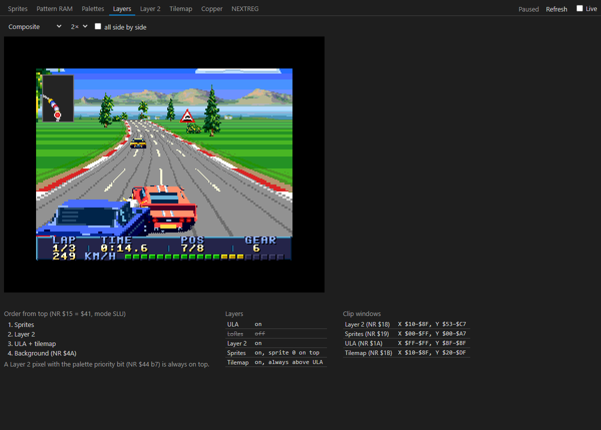
Splits the picture into the layers the Next composes it from. The drop-down on the left selects what to see: Composite, ULA, ULA shadow, Layer 2, Layer 2 shadow, Sprites, Tilemap, Background; next to it is the 1× / 2× zoom. The all side by side check box shows thumbnails of all layers at once – click a thumbnail to show it large.
A checkerboard means the layer draws nothing there (transparent). Hovering prints the coordinates
below the picture (x, y in the 320 × 256 space and the column in the 640 pixel
wide picture) and the pixel colour (#rrggbb and RGB333). Layers are drawn for the whole frame
with the registers replayed line by line, so raster splits and Copper effects show up too.
Below the picture are three blocks of information:
- Order from top (NR $15, mode SLU, LSU …) – the layers from the top down, with the background (NR $4A) at the end. For the colour blending modes (L+U add / subtract) it describes how ULA and tilemap are blended with Layer 2. Disabled layers are struck through. A note reminds you that a Layer 2 pixel with the palette priority bit (NR $44 b7) is always on top.
- Layers – whether ULA (NR $68 b7), LoRes, Layer 2 (NR $69 b7 / port $123B), sprites (also in border, sprite 0 on top) and tilemap (always above ULA, or by attribute) are enabled.
- Clip windows – the Layer 2, sprite, ULA and tilemap windows.
If the machine stops in the middle of a frame, lines below the beam are drawn with the current register state – on the emulator screen the previous frame is still there, so they may differ.
Layer 2
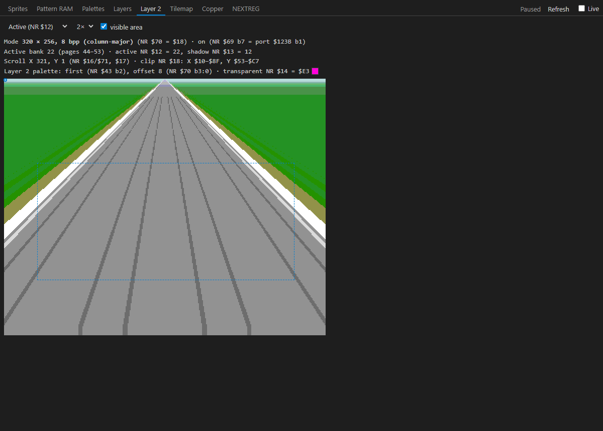
The whole Layer 2 content from memory – not just what is visible. The drop-down on the left selects the bank: Active (NR $12) or Shadow (NR $13); then the zoom and visible area: a dashed rectangle shows what is on screen after scroll and clip, a circle marks the top-left corner of the screen.
Info lines at the top: the mode (NR $70 – 256 × 192, 8 bpp, 320 × 256, 8 bpp (column-major) or 640 × 256, 4 bpp (column-major)) and whether Layer 2 is on; the bank and its pages; scroll X/Y (NR $16/$71, $17) and clip NR $18; the palette (first/second per NR $43 b2), palette offset (NR $70 b3:0) and the transparent colour NR $14. Hovering prints the bank and offset (and the 8K page), the byte at that point (for 4 bpp which nibble), the colour index and, if so, (transparent).
Tilemap
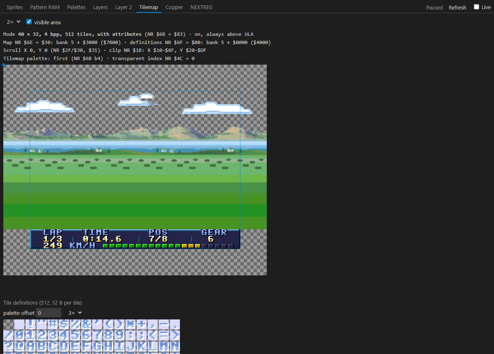
At the top is the whole map (40 × 32 or 80 × 32 tiles) with 1× / 2× zoom and the visible area option (dashed visible part after scroll and clip, circle = top-left corner of the screen). Info lines: the mode (NR $6B – number of columns, 4 bpp or text 1 bpp, 256/512 tiles, with or without attributes – then the default attribute NR $6C applies), whether the tilemap is on and whether it is always above ULA; the map (NR $6E) and definitions (NR $6F) addresses in bank 5 or 7; scroll (NR $2F/$30, $31) and clip NR $1B; the tilemap palette (NR $6B b4) and the transparent index NR $4C (in text mode the colour NR $14).
Hover over a tile in the map: its column and row, the tile index, the attribute broken down into palette, mirroring, rotation and priority relative to ULA, and the addresses of the map entry and the definition are printed. The tile is also framed in the definitions below the map and highlighted on the emulator screen where it lies after scrolling.
Tile definitions below the map: all defined tiles in a grid of 16 per row; above them the palette offset for the preview (0–15) and 2× – 4× zoom. Hovering shows the tile number and the address of its definition.
Copper
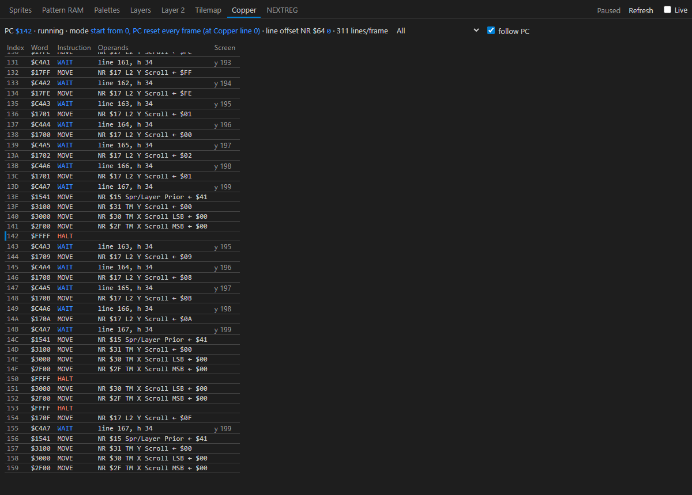
The whole Copper program (1024 instructions). The status line at the top: PC $xxx (where
the Copper is now), running / stopped, the mode (NR $62 bits 7:6: stop, start
from 0 (PC = 0 when enabled), resume from current PC, start from 0, PC reset every
frame), the line offset NR $64 and the number of lines per frame. The Which
instructions to show drop-down: All, Without trailing NOPs, Up to first
HALT; follow PC scrolls the table so the row with PC is visible.
| Column | Meaning |
|---|---|
| Index | position in the program (0–3FF) |
| Word | the 16-bit instruction in hex |
| Instruction | MOVE, WAIT, NOP, HALT |
| Operands | for MOVE NR $40 Palette Index ← $10 (the tooltip breaks down the bits of the value), for WAIT line 100, h 0 |
| Screen | for WAIT the screen line (y 132 in the 320 × 256 area including the border), off screen, or never when the frame has no such line |
Hover over a WAIT row – the line it waits for is highlighted with a horizontal line on the emulator screen. The tooltip of a WAIT explains which line and horizontal position it waits for; HALT is a WAIT for line 511, which never happens.
NEXTREG
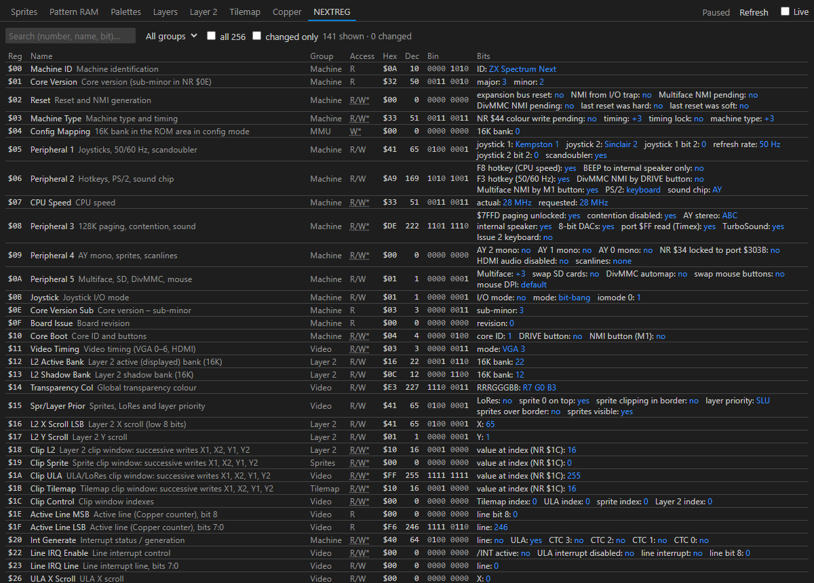
A table of the Next registers with name, group, access, the value in hex, decimal and binary, and a bit breakdown into named fields (for example the CPU speed for NR $07, the layer order for NR $15). Toolbar:
- Search (number, name, bit)… – filters by register number, name or bit field name.
- All groups – limits the table to one group: Machine, Video, Layer 2, Sprites, Tilemap, Copper, Palettes, MMU, Sound, Other.
- all 256 – also shows numbers the Next does not define.
- changed only – only registers changed since the last refresh.
Registers that changed since the last refresh have a highlighted row and the changed bits are
emphasised – just step and watch what changes. The count is on the right (84 shown ·
3 changed). The Access column: R/W read and write, R read only,
W write only – for write-only registers the value shown is the last write (or 0 if the
emulator does not keep it); an asterisk and a tooltip warn when the value read differs from the value
written.
Saved states
A saved state is a snapshot of the whole machine – memory, registers, hardware. It is useful when you want to return to the same place in a game repeatedly (before the boss fight, before the bug) without playing your way there every time.
Saving and restoring
- MB Maniax: Save State… – the floppy disk button on the debug toolbar or the command from the palette. An input box Save Emulator State opens at the top; enter a name and press Enter. The same name overwrites an older state (the extension asks first).
- MB Maniax: Restore State… – the clock button. Pick a state from the list; the machine returns to it and stays stopped (the Call Stack shows the reason state restored). Continue with F5.
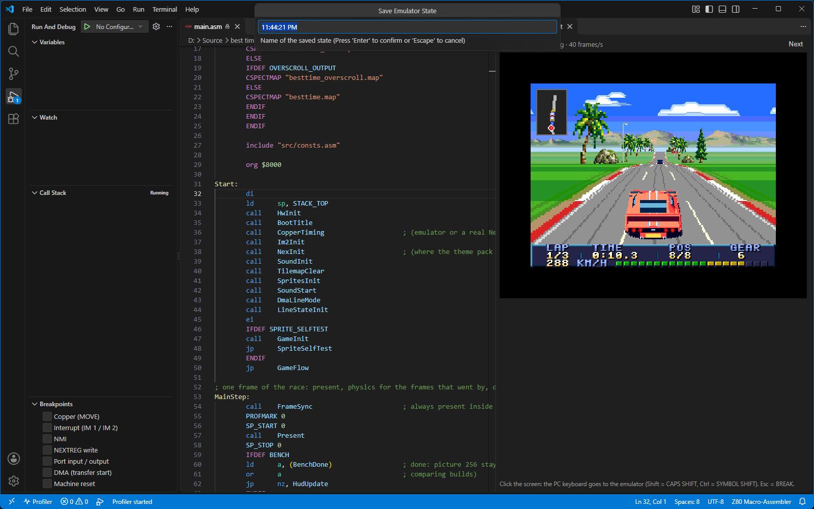
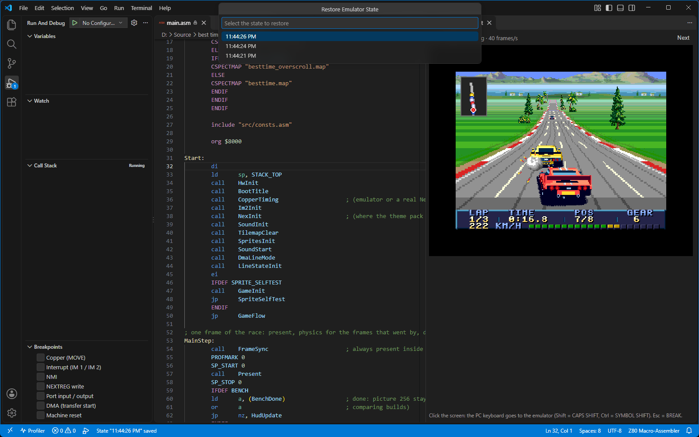
States belong to the current debug session (until Stop) – they survive a Restart. There can be at most 8 of them per session. Restoring does not change breakpoints or the profiler.
States are saved at the end of a frame
The emulator can save a state only at a frame boundary. A running program is always at one, so saving while running happens immediately. If the machine is stopped in the middle of a frame (breakpoint, step), the extension asks: The machine is stopped in the middle of a frame. A state can only be saved at the end of a frame. Run to the end of the current frame and save the state there? The Run to End of Frame and Save button runs the program to the end of the frame (breakpoints are ignored meanwhile), stops (reason frame boundary) and saves the state.
Export to and import from a file
MB Maniax: Export State to File… saves the current state to a
.mbxstate file, MB Maniax: Import State from File… loads it – also in
another debug session. Both commands are available only in the Command Palette and only while
debugging. A file can be loaded only by the same version of the extension and for the same
machine type; after updating the extension, old files cannot be loaded.
Profiler
The profiler measures where the program spends its time. It adds up the T-states (CPU clock cycles) spent on every instruction and shows the result right in the source: for each line how much it cost, and with a colour how expensive it is compared to the others.
Starting
- While debugging, click the Start Profiler button (pulse icon) on the debug toolbar, or run MB Maniax: Start Profiler from the Command Palette. Profiler appears in the Status Bar at the bottom left.
- Let the program run through the part you want to measure (for example a few seconds of the game).
- Stop the program (F6, a breakpoint). Every time it stops, the result is shown in the open
editors and the Status Bar shows the total:
Profiler: 3,512,000 T.
Reading the results
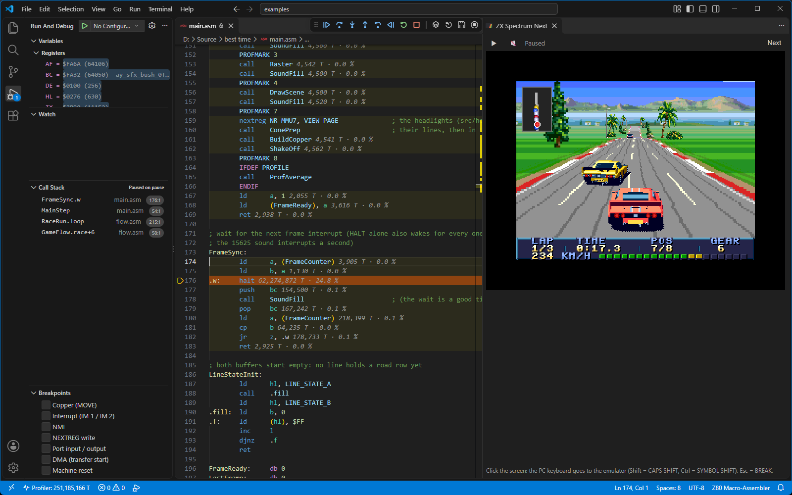
- Grey text after the end of a line, e.g.
1,234 T · 12.3 %: the line used 1,234 T-states, which is 12.3 % of all T-states during the measurement (including time outside your source). Hovering over the line repeats it in a tooltip. - Line background from light yellow to red: the line's cost relative to the most expensive line (8 levels). The most expensive lines are the reddest – look at them first.
- Marks in the scroll bar on the right (overview ruler): the same colours, so you can find the expensive places even in a long file without scrolling.
A line executed many times is expensive even if the instruction itself is fast – the profiler shows
the total time, not the time of one pass. Everything the CPU executes counts: waiting in
HALT (every repetition) and accepting an interrupt (attributed to the instruction before
which it came). Time when the CPU is held by DMA and time while paused are not counted. Instructions in a
macro are attributed to the line the macro is invoked from.
Most expensive functions
MB Maniax: Show Profiler Results – from the Command Palette, or by clicking Profiler in the Status Bar – opens the list Most expensive functions, sorted from the most expensive. A function is the code from one global label to the next global label (local labels with a dot belong to their parent). Each shows the total T-states with the share, and the file and line; select one to go there. The item Outside the source code (ROM, code without SLD) at the end adds up the time spent outside your source.
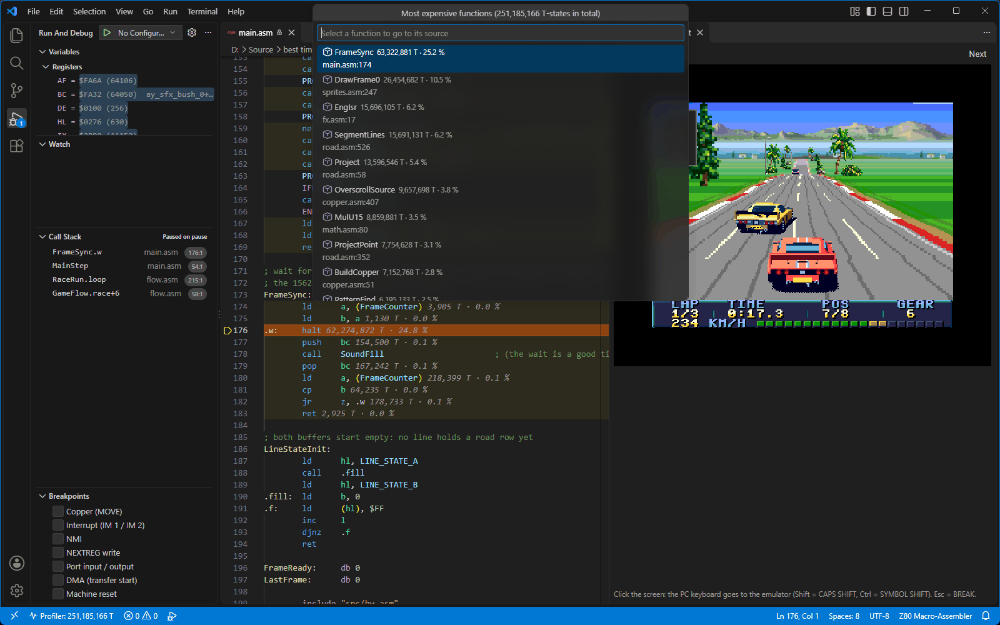
Live updates, stopping, clearing
- MB Maniax: Toggle Live Profiler Updates – results are refreshed while running too, every second. Handy when you want to see the numbers change while playing.
- MB Maniax: Stop Profiler (button on the debug toolbar) – the measurement ends; the last results stay in the editor (even after debugging ends). A notification shows the measured total with a Show Results button; the total also stays in the status bar, and clicking it opens the list of the most expensive functions again at any time.
- MB Maniax: Clear Profiler Data – starts counting from zero and removes the colouring. The profiler keeps running.
Tips
- Measure only what you are interested in: run the program, get to the place, run Clear Profiler Data, let it run and stop.
- A main loop waiting on
HALTshows a large number right at theHALT– that is the free time of the frame, not a bug. The smaller HALT's share, the less headroom you have. - Restart and reloading the program reset the counters; the profiler stays on.
- The profiler counts by physical address (page + offset), so paged code does not get mixed up even when it runs at the same address.
Step Back
Step Back moves the machine back by one instruction – repeatedly if you like. For this the emulator remembers the last 10 seconds of execution. It is useful when the program stops on a bug and you want to see how it got there.
Enabling it
Step Back is off by default because recording the instruction trace slows emulation down – by about a quarter on a Next at 28 MHz. Enable it in launch.json:
"rewind": trueand start debugging again. Without it, the Step Back button reports Step Back is turned off – set "rewind": true in launch.json (emulation then runs slower).
Using it
While the program is stopped, click Step Back (an arrow curving backwards) on the debug toolbar. Each click goes back one instruction; registers, memory and the picture correspond to the state before it. You can then step forward again. The Reverse button (run backwards to a breakpoint) is not available yet – it reports Reverse Continue is not available yet – use Step Back.
If the slowdown bothers you only sometimes, keep two configurations in launch.json –
one with "rewind": true and one without – and pick between them in the list next to the green
button in Run and Debug.
Start into NextZXOS
Normally the program is loaded straight into the emulator's memory, without an operating system. With a start into NextZXOS the emulator boots the real NextZXOS from an SD card and NextZXOS starts the program – just like on a real Next. The program then has everything NextZXOS gives it: its esxDOS, the Browser, BASIC, drivers. This is useful for programs that need NextZXOS, and to see how a program behaves when started from the Browser.
NextZXOS is not part of the debugger. The System/Next distribution (NextZXOS © Garry Lancaster, firmware, ROMs) belongs to its authors and comes under its own license ("The Next License"). The debugger therefore does not bundle it: it downloads the official distribution for emulators from specnext.com only when you ask and after you agree to the license, and keeps it only in the extension's data on your computer.
Downloading NextZXOS
Run the command MB Maniax: Download NextZXOS from the palette (Ctrl+Shift+P). You get the same offer on the first start into NextZXOS if it is not downloaded yet.
- The distribution's license opens, loaded from the distribution's official repository. Read it and click I agree – download. The consent is remembered; you are asked again only when the license text changes.
- The distribution zip (about 50 MB) is downloaded. The debugger checks its size and SHA-256 fingerprint and deletes a file that does not match.
- An SD card image (about 1 GB) is prepared from the zip, and from it the working card. The NextZXOS welcome program, which waits for a key, is turned off on it (the same as its D option).
Everything lives in the extension's data (globalStorage, folder nextzxos), about 2 GB
in total. The default is System/Next 24.11 (NextZXOS 2.09). A newer distribution is set with
mbxNext.nextzxos.url, mbxNext.nextzxos.sha256 and
mbxNext.nextzxos.size (see ).
Configuration in launch.json
Add "boot": "nextzxos" to the configuration (or insert the ready-made configuration
MB Maniax: Start into NextZXOS with Add Configuration…):
{
"type": "mbx-next",
"request": "launch",
"name": "Debug via NextZXOS",
"program": "${workspaceFolder}/build/game.nex",
"sld": "${workspaceFolder}/build/game.sld",
"esxdosRoot": "${workspaceFolder}/data",
"boot": "nextzxos"
}After F5:
- The program and the contents of
esxdosRoot(without it, the folder the program is in) are copied to the card into/MBX/<program name>– here/MBX/game. Hidden files and folders (.git…) are left out; names must be ASCII. - A short program is written to
c:/nextzxos/autoexec.basthat goes to that folder and starts the program. Your own autoexec.bas on the card is set aside and restored after the session. - The emulator boots NextZXOS (you see the whole start on the emulator screen; it takes about 8 seconds) and NextZXOS starts the program. The Debug Console says NextZXOS is starting from the SD card ….
- The debugger stops on the program's first instruction and only then sets the breakpoints – earlier they could hit NextZXOS code at the same addresses. From there you debug as usual.
The program's current folder is its folder on the card, so it finds its data by relative paths, as when started from the Browser.
| Attribute | Default | Meaning |
|---|---|---|
boot | – | "nextzxos" – start into NextZXOS. |
sdImage | working card | Your own card image instead of the working card (a NextZXOS card in FAT32 that JNEXT can mount). |
esxdosRoot | program folder | Folder whose contents are copied to the card next to the program. |
cardFolder | /MBX/<name> | The program's folder on the card. |
autorun | true | false – NextZXOS does not start the program but opens the Browser in its folder; the debugger stops when you start the program yourself. |
syncBack | false | After the session, copy the files the program created or changed on the card back to esxdosRoot. |
Files the program changes
The program writes to the card, not to the folder on disk. With "syncBack": true the
debugger compares the program's folder on the card with esxdosRoot when the session
ends and copies new or changed files back; the Debug Console lists them. Files the program deleted
on the card are only listed – they stay in the folder on disk. It is off by default, and then
nothing changes on disk.
Step Back does not undo writes to the card – just like writes to disk when debugging without a card.
The working card
There is one working card for all projects; each program has its own folder in /MBX
on it. To keep it from filling up with leftovers you have three options:
| Command / setting | What it does |
|---|---|
| MB Maniax: Clean NextZXOS Working Card (/MBX) | Deletes the /MBX folder with all programs from the card. The rest of the card (NextZXOS settings, whatever you saved elsewhere) stays. |
| MB Maniax: Reset NextZXOS Working Card | Returns the whole card to its downloaded state. |
mbxNext.nextzxos.cardReset = afterSession | Returns the whole card to its downloaded state after every debug session that booted from it – every session then starts with a clean card. |
The card cannot be reset or cleaned while a debug session runs from it.
A breakpoint that would hit NextZXOS code does nothing during the boot – breakpoints are set only once the program has started. If NextZXOS does not start the program (a file is missing, say), you see the NextZXOS error on the emulator screen and the debugger keeps waiting; end it with Stop.
WiFi (ESP-01)
The Next has an ESP-01 WiFi module on UART 0 that programs talk to with AT commands. The
debugger can emulate it: with "esp": true in launch.json the program gets a module that
opens real TCP/UDP connections from your computer. That way you can debug network programs –
mail, IRC, HTTP – against a server on your LAN or on the internet. The module is off by default: a
program does not reach the network unless you allow it, and nothing answers it on UART 0.
Turning it on in launch.json
{
"type": "mbx-next",
"request": "launch",
"name": "Debug mail with WiFi",
"program": "${workspaceFolder}/build/mail.nex",
"sld": "${workspaceFolder}/build/mail.sld",
"esp": true,
"espAllowedHosts": ["192.168.1.10"]
}When debugging starts, the Debug Console says that WiFi is on and where the program may connect.
| Attribute | Default | Meaning |
|---|---|---|
esp | false | Turns on the emulated ESP-01 module on UART 0. |
espAllowedHosts | any host | The only hosts the program may connect to – names or IP addresses exactly as it writes them in AT+CIPSTART (case does not matter, no wildcards). |
espListenAddress | 127.0.0.1 | The address AT+CIPSERVER listens on (the program as a server). 0.0.0.0 opens it to the whole network. |
espIpAddress | 192.168.1.50 | The address the module reports to the program (AT+CIFSR, AT+CIPSTA?). Informative only – nothing listens on it. |
A server on your own computer
The module always refuses loopback: the program cannot connect to 127.0.0.1
or localhost (AT+CIPSTART answers ERROR and the Debug Console
shows a REFUSED … warning). LAN addresses (10.x, 172.16–31.x, 192.168.x) are allowed. So
start a test server on all interfaces and point the program at the computer's LAN address (the
ipconfig command shows it):
php -S 0.0.0.0:8080 → program: AT+CIPSTART="TCP","192.168.1.128",8080How the module answers
- The module is joined to the network
JNextWifiHostfrom power-on:AT+CWJAP?answers+CWJAP:"JNextWifiHost",…andAT+CWJAP="network","password"accepts any network, so a program's usual connect sequence passes. AT+CIPSTARTover TCP answers justOK, without theCONNECTline real firmware sends. A program that waits forCONNECTwould wait in vain in the emulator – let it wait forOKorERROR.- Data from the server arrives as
+IPD,<length>:…, a closed connection asCLOSED, as with the real module. - The UART speed follows the prescaler as on the Next (115,200 baud by default).
The network is outside the emulator: neither Step Back nor restoring a saved state undoes connections. While paused the module keeps receiving and the program gets the data when it runs again. WiFi also works with the start into NextZXOS.
Debugging the traffic
has a WiFi (ESP) tab. It shows everything the program sent to the module (→) and everything the module answered (←), line by line with the frame number:
- AT commands are bold,
OKgreen,ERRORandFAILred, the+IPD,…:header purple; line ends show as↵, other control characters as\xNN; - long data is shortened, a click on the line expands it; hovering shows the sequence number, frame, T-state and length;
- at the top is the module's state (WiFi connection, address, allowed hosts, byte counts) and
the last five connections – opened, closed, refused (a host outside
espAllowedHostsor loopback), failed; - the toolbar has Clear, Copy (the shown lines as text), a filter, Hex and Follow (scroll to the newest line).
The debugger keeps the log all the time, even with the panel closed (up to 4 MB); a reset keeps it, a new debug session starts it afresh. The tab updates when the program stops and on Refresh, and while it runs with Live on. It replaces a communication log of your own in the program – there is no need to store the module's replies in memory and read them from there.
Two event breakpoints stop the program on a particular exchange (the
Breakpoints view, see ):
ESP: line sent (Z80 → ESP) and ESP: line received
(ESP → Z80). They stop on the OUT or IN instruction that completed the
line (with its line end), so you stand right in the code that sends the command or reads the reply.
The condition here is not an expression but text the line must contain (case-insensitive), or a
regular expression between slashes:
CIPSTART → stops on AT+CIPSTART=…
/^(ERROR|FAIL)$/ → stops when the program reads an error
/^\+IPD,\d+:/ → the first line of data from the serverWithout a condition every line stops. After the stop, the line is in the stop reason description (Call Stack).
Settings and launch.json
launch.json configuration attributes
A configuration of type "mbx-next" in .vscode/launch.json. While typing, VS Code
suggests attribute names and their descriptions (Ctrl+Space).
Paths may contain VS Code variables: ${workspaceFolder} (the open folder),
${fileDirname} (the folder of the open file) and others. A complete example:
{
"type": "mbx-next",
"request": "launch",
"name": "Debug the game (with Step Back)",
"program": "${workspaceFolder}/build/game.nex",
"sld": "${workspaceFolder}/build/game.sld",
"stopOnEntry": false,
"rewind": true,
"esxdosRoot": "${workspaceFolder}/data",
"preLaunchTask": "sjasmplus"
}Extension settings
Settings (Ctrl+,, search for mbxNext):
Command overview
| Command | Where |
|---|---|
| MB Maniax Next: Show Emulator Screen | palette |
| MB Maniax: Next Panel (Sprites, Palettes, …) | debug toolbar, palette |
| MB Maniax: Save State… | debug toolbar, palette |
| MB Maniax: Restore State… | debug toolbar, palette |
| MB Maniax: Export State to File… | palette (while debugging) |
| MB Maniax: Import State from File… | palette (while debugging) |
| MB Maniax: Start Profiler | debug toolbar, palette |
| MB Maniax: Stop Profiler | debug toolbar, palette |
| MB Maniax: Show Profiler Results | palette, Status Bar |
| MB Maniax: Toggle Live Profiler Updates | palette (while debugging) |
| MB Maniax: Clear Profiler Data | palette (while debugging) |
| MB Maniax: Download NextZXOS | palette |
| MB Maniax: Reset NextZXOS Working Card | palette |
| MB Maniax: Clean NextZXOS Working Card (/MBX) | palette |
Troubleshooting
- Cannot set a breakpoint – no red dot appears when hovering over the margin
-
VS Code allows breakpoints only in files whose language some debugger supports. This extension reports them for the languages
z80-asm,asm-collection,z80-macroasm,asm,asm-x86-nasm,nasm,masm,c6510andplaintext(Plain Text). If you have an extension for another assembler installed that claims.asmunder a different language, breakpoints will not work.- Look at the bottom right of the Status Bar – it shows the language of the open file (e.g. Plain Text, Z80 Assembly, ARM…).
- Click it. A language picker opens at the top; choose Configure File Association for '.asm'… and select a Z80 language (depending on the installed extension e.g. Z80 Assembly, Z80 Macro-Assembler) or Plain Text.
VS Code writes this into the
files.associationssetting. You can also write it by hand (Preferences: Open User Settings (JSON) from the Command Palette):"files.associations": { "*.asm": "z80-macroasm", "*.i.asm": "z80-macroasm" }The value must be a language identifier from the list above that is available to you (
plaintextalways is). - The breakpoint is grey and hollow
The breakpoint is not verified. Hover over it – the tooltip says why: SLD from sjasmplus is missing ("sld" attribute) → add
"sld"to launch.json; No instruction on this line or below it (according to SLD) → the line is not in the SLD (it is a comment or data, or the file was not built with this SLD); a condition error → fix the condition ().- The program does not stop at a breakpoint
-
- The SLD is missing or out of date: build with
--sld=… --fullpathand check that launch.json points to the same file. When starting without an SLD, the extension warns "sld" is missing in launch.json… or Cannot load SLD…. - The paths in the SLD do not match the files in the editor: use
--fullpath, or setsourceRoot. - You are building a different copy of the file than the one open in the editor (another folder).
- Paged code: the breakpoint stops only when the page is mapped in (). Check which page is in the slot under Variables › Machine (MMU, time).
- The breakpoint is disabled (unticked in the Breakpoints section), or all breakpoints are deactivated (the Toggle Active Breakpoints button in the section header).
- The program was not rebuilt after a change –
preLaunchTaskis missing from launch.json, or the build failed (the Problems and Terminal tabs).
- The SLD is missing or out of date: build with
- Debugging does not start
-
- Program not found: … – the
"program"path is wrong, or the program has not been built yet. - Debug server not found (…) – the extension is damaged or
mbxNext.serverPathis set wrong; clear the setting, or reinstall the extension. - The debug server is not responding / The debug server exited during startup – try starting debugging again; details (server output) are usually in the Debug Console. An antivirus can also block the server from starting.
- The
sjasmplustask cannot be run – sjasmplus is not on thePATH().
- Program not found: … – the
- Choppy sound, slow emulation
-
- Check Running · N frames/s in the screen bar. Below 50 the computer cannot keep up.
- Turn off Step Back (
"rewind": false) – the instruction trace slows things down by about a quarter. - Turn off Live in the Next panel and live profiler updates; close the Next panel when you do not need it.
- Logpoints printing thousands of times per second slow down the Debug Console – use a hit count
(
% 50) or a condition. - The screen panel redraws only while it is visible; hidden behind another tab it costs nothing.
- The screen panel or the Next panel disappeared
The panels are editor tabs: look for them in another tab group, or open them again – MB Maniax Next: Show Emulator Screen and MB Maniax: Next Panel (Sprites, Palettes, …).
- The keyboard does not work in the emulator / shortcuts do not work in VS Code
Keys go to the emulator only while the screen has the focus (click into it). Conversely, VS Code shortcuts (F5, F10) work only when the screen does not have the focus – click into the editor.
- No sound
Click the screen or the 🔇 button – sound may start only after a click. Check that the program is running (it is silent while paused) and that the icon shows 🔊.
- The extension speaks a different language than I want
Set
mbxNext.language() and start debugging again. Command names and the descriptions in Settings follow the VS Code display language (the Configure Display Language command), not this setting.- The old version still runs after an update
Stop debugging and reload the window: Ctrl+Shift+P → Developer: Reload Window ().
- A saved state file cannot be imported
A
.mbxstatefile can be loaded only by the same version of the extension and for the same machine type (machine).
Keyboard shortcuts
Default VS Code keyboard shortcuts on Windows that are useful while debugging. Customise them in File › Preferences › Keyboard Shortcuts (Ctrl+K Ctrl+S).
| Shortcut | Action |
|---|---|
| F5 | Start debugging / Continue |
| F6 | Pause |
| Shift+F5 | Stop debugging |
| Ctrl+Shift+F5 | Restart |
| F10 | Step Over |
| F11 | Step Into |
| Shift+F11 | Step Out |
| F9 | Toggle breakpoint on the cursor line |
| Ctrl+Shift+D | Run and Debug side bar |
| Ctrl+Shift+Y | Debug Console |
| Ctrl+Shift+P, F1 | Command Palette |
| Ctrl+Shift+B | Run the default build task (sjasmplus) |
| Ctrl+Shift+M | Problems (build errors) |
| Ctrl+` | Terminal |
| Ctrl+J | Show / hide the bottom panel |
| Ctrl+Shift+E | Explorer (files) |
| Ctrl+Shift+X | Extensions |
| Ctrl+, | Settings |
| Ctrl+P | Quick open a file by name |
| Ctrl+G | Go to line |
| F12 | Go to definition (if your assembler extension provides it) |
In the emulator screen (when it has the focus): Shift = CAPS SHIFT, Ctrl = SYMBOL SHIFT, Esc = BREAK.